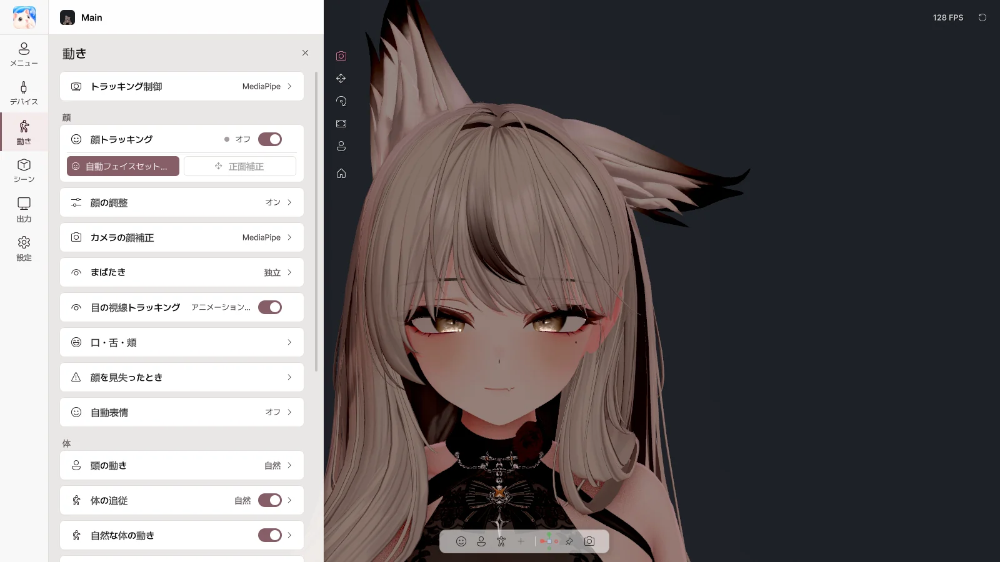

7. 動き#
動き ページでは、顔・体・手の動き方を決めます。設定はアバターごとに保存されます。

動きページ
トラッキング制御#
| スイッチ |
内容 |
| ミラー（鏡のように動く） |
鏡のように左右を合わせる |
| 腕 / 手 / 指 |
Web カメラで各部位を動かす |
| ジェスチャー → 表情 |
手の形をアバターのジェスチャー表情にする |
| 項目 |
内容 |
| 顔トラッキング |
表情のトラッキングをオン / オフ |
| 自動フェイスセットアップ |
案内に従って表情を作ると、自分の顔に合わせて自動で調整 |
| 正面補正 |
今の顔の向きを正面に |
Avatar Live は、アバターが持っているフェイストラッキングの設定（VRCFaceTracking、ARKit・MMD のシェイプキー、VRChat の Eye Look・LipSync）を見つけてそのまま使います。別途セットアップする必要はありません。
自動フェイスセットアップ#
 自動フェイスセットアップ
自動フェイスセットアップ
画面の案内に従って、無表情、目を閉じる、口を開ける、話す、笑う、唇をすぼめる、頬を膨らませる、舌を出す、視線を動かす、を順番に行い、測定 を押します。終わったら 適用 を押してください。
- 戻る / スキップ / キャンセル でステップを移動します。
- 最初のステップで見ている場所が、アバターの正面の視線になります。配信するときと同じように画面を見てください。
- 顔を明るく照らすと、より正確になります。
顔の調整#
| 項目 |
内容 |
| 顔の値を調整する |
調整値の適用をオン / オフ |
| 左右を一緒に編集 |
片側を変えると反対側も一緒に変わる |
| スムージング |
ぶれを抑える |
| 値の一覧（目 · 眉 · 口 · 頬・鼻） |
各表情をどのくらい大きく出すかを調整 |
| この値をリセット / すべての値をリセット |
初期状態に |
カメラの顔補正#
カメラ側の基準を合わせます。すべてのアバターに共通です。
| スライダー |
変更するもの |
| まばたきで閉じる位置 |
どのくらい閉じたら目を閉じたとみなすか |
| 口が全開になる位置 |
どのくらい開けたら口を全開にしたとみなすか |
| 上の歯が見え始める位置 |
上の歯が見え始める度合い |
| 笑顔で上の歯を隠す |
笑ったときに上の歯を見えにくくする |
| 左右の視線範囲 / 上下の視線範囲 |
瞳が動く範囲 |
| 頬の膨らみ最大 |
頬の膨らみの最大の大きさ |
まばたき#
| 項目 |
内容 |
| 方式 |
独立（目ごと、ウインク可）/ 同期（両目一緒）/ スマート（ふだんは一緒、ウインクは個別） |
| まばたきの強さ / まばたきの反応 |
どのくらい閉じるか、どのくらい速く反応するか |
| 詳細 |
左右の強さ、閉じる・開く速度 |
目の視線トラッキング#
瞳が視線に合わせて動くようにします。
口・舌・頬#
| 項目 |
内容 |
| 口 メーター |
今のリップシンクの状態 |
| 自動レベル |
声の大きさに合わせて口の大きさを自動調整（オフにすると 感度 で手動調整） |
| マイク → フェイストラッキング |
声をフェイストラッキングの口にも使うかどうか |
| 音声キャリブレーション |
母音のボタンを押して発音し、自分の声に合わせる → 音声プロファイルを保存 |
舌・頬の膨らみ#
| 項目 |
内容 |
| 名前のスイッチ |
今すぐオン |
| カメラで検出 |
カメラで舌・頬を認識（自動フェイスセットアップのあとに使用） |
| キー |
ショートカットでオン（押している間 / 押して切り替え） |
舌・頬の膨らみの カメラで検出 は正常に動作する見込みですが、すべての顔・カメラでテストされてはいない 実験的機能 です。
顔を見失ったとき#
| 項目 |
内容 |
| 最後の表情を保つ時間 |
一瞬見失ったときに表情を保つ時間 |
| ニュートラルに戻る時間 / 再検出時の切り替え時間 |
表情の切り替わりのなめらかさ |
| 自動まばたき / 自動で視線を動かす / カメラを見る |
顔が見えない間の目の動き |
| 項目 |
内容 |
| 頭のトラッキング |
頭の動きをオン / オフ |
| 強さ |
控えめ / 自然 / 大きめ |
| 体の追従 |
胸・背骨が頭に自然についていく |
| 自然な体の動き |
じっとしていても少し動く |
| 呼吸 |
呼吸の動き |
| 頭の待機モーション |
トラッキングしていないときに頭が少しずつ動く |
手・デスク#
デスク操作#
手がカメラに映っていないとき、実際のキーボード・マウスの入力に合わせてアバターの手がタイピングし、マウスを動かします。
🔒 キーボード入力はアバターの手を動かすためだけに使います。入力した文字は保存・記録・送信しません。
| 項目 |
内容 |
| デスク操作 |
オン / オフ |
| 手の基本姿勢 |
机の高さ・距離、手の間隔、ひじ、手首、指の曲げ |
| 手の基本姿勢をプレビュー |
姿勢を確認 |
| キーボード入力への反応 |
タイピング時の指・手・手首の動きの大きさ |
| マウス入力への反応 |
マウスを持つ手（右 / 左 / 自動）、動き・クリックの大きさ |
| 自分のマウス姿勢 |
今の姿勢をマウスの姿勢として保存 |
トラッキングが途切れたとき#
手が見えないときのポーズを選びます：キーボード / 机 · 最後のポーズを保持 · 体の横で楽に · アバターのアニメーション · 自分のポーズ
- 手を下ろしたら手の基本姿勢に — 手を下ろすと、カメラに映っていても基本姿勢にする
詳細設定#
| 項目 |
内容 |
| 頭・体の細かい調整 |
頭の回転・位置の強さ、体の追従の詳細 |
| タイピングスタイル |
控えめ / 自然 / 大きめ |
| 顔の互換性 |
アバターが持っているフェイストラッキング設定を確認 |
| 顔の出力 |
自動（推奨） / VRCFT優先 / Perfect Sync優先 |
| シェイプキーの上限 |
シェイプキーごとの最大値を制限 |
最終更新: 2026-10-09